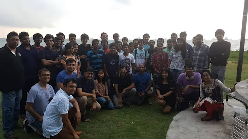
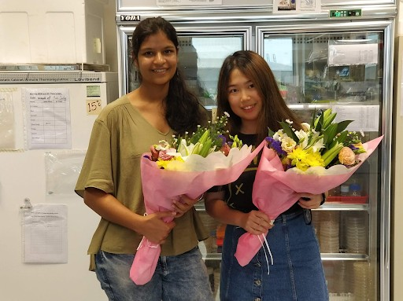

July 7, 2019
In the fourth article of the blog series - RISE,
Mihikaa Jain, an undergraduate Student in the
Department of Biological Sciences and Bioengineering from the
Y15 batch, brings forward the delicate intricacies involved in
the process of applying for a research internship. She did her
research intern at Temasek Life Sciences Laboratory, in the
National University of Singapore.
NUS is the first autonomous research university in
Singapore. The QS World University Rankings 2019 ranked NUS
11th in the world and 1st in Asia-Pacific. Temasek Life
Sciences Laboratory (TLL) was established in August 2002 as
a Non-Profit Philanthropic Research Organisation. TLL has
230 researchers from about 20 different nationalities to
engage in biomolecular science research and applications so
as to benefit people in Asia and beyond.

Hello! So..welcome to third year. It's the year with probably
maximum opportunities and the one where most of us go through
maximum confusion. There are so many possibilities, limited
time and it becomes tough at times to decide what to
prioritize over what. For me, it was the time around which I
started to develop a liking for my discipline - BSBE and
decided to give it a solid shot before graduation so that if
in future I do end up switching fields and end up with
something completely different as a career option, I would
have the satisfaction of exploring my major first. Hence, like
most of the students at this point of their college life, I
decided to go for a research internship during my third year
summers. Having absolutely zero research experience, it became
essential for me to join a lab to gain a better understanding
of the subject as well as understand the nuances of research.
I felt the purpose would be better served for me, if there was
a formal evaluation at the end of it and thus I opted for
credited UGPs in both my 5th & 6th semester. This works
differently for everyone I believe, while for some formal
evaluation may improve their performance or ensure they follow
deadlines other people may do better without this additional
pressure and pursue the subject out of their own personal
motivation.
 Now coming to the actual process of looking for an internship.
Again, I would like to emphasize that these are my personal
views and experiences and could be very varied for everyone.
So, I started by talking to seniors to figure out the entire
process and researching the various options available. The
realization I came to was that the opportunities offered
through the institute usually had a very strict evaluation
criteria. Hence, one would have to look for opportunities
externally and apply independently extensively. This is not to
say that I didn’t look at applying to the standard programs,
though I did it very half heartedly. Here I would like to
mention that it was a mistake on my part which I realized
later. One should give their best to all applications and even
apply to the most prestigious programs, even if you feel you
don’t stand a decent shot, because we never realize what might
just work out. A thing which comes in handy with the
application procedure, and may be pretty exhausting at times
is to identify professors beforehand, at least two, who would
be willing to recommend you and have a conversation about your
plans well in advance, preferably at the beginning of the 5 th
semester itself. Additionally, working on a write up about
your research interests, your journey so far and your future
plans can reduce the time you will take while applying later.
Now coming to the actual process of looking for an internship.
Again, I would like to emphasize that these are my personal
views and experiences and could be very varied for everyone.
So, I started by talking to seniors to figure out the entire
process and researching the various options available. The
realization I came to was that the opportunities offered
through the institute usually had a very strict evaluation
criteria. Hence, one would have to look for opportunities
externally and apply independently extensively. This is not to
say that I didn’t look at applying to the standard programs,
though I did it very half heartedly. Here I would like to
mention that it was a mistake on my part which I realized
later. One should give their best to all applications and even
apply to the most prestigious programs, even if you feel you
don’t stand a decent shot, because we never realize what might
just work out. A thing which comes in handy with the
application procedure, and may be pretty exhausting at times
is to identify professors beforehand, at least two, who would
be willing to recommend you and have a conversation about your
plans well in advance, preferably at the beginning of the 5 th
semester itself. Additionally, working on a write up about
your research interests, your journey so far and your future
plans can reduce the time you will take while applying later.
The most daunting and toughest part of finding a research
internship, for me, was the part about ‘apping’’. This is the
part where one looks independently for professors across
various universities abroad and writes to them seeking an
opportunity to intern in their lab in the summers. The mail
will typically have one’s resume and a cover letter or
something along the lines of an SOP attached. Because of the
nature of the process, the success rate is usually very low
and it can be a really challenging phase for one. It was for
me for sure. It made me doubt my own capabilities, there were
times when I didn’t feel like talking to anyone, went in
isolation and would begin to question the entire point of me
pursuing engineering even. I was not even sure who could I
approach at that time and it begins to get even worse when a
lot of your batch mates have already secured internships and
you’re still looking for one as the academic year draws to an
end, as was in my case. What really did get me through was the
support from family and friends, and realizing that this is
just one small part of a jigsaw puzzle in the larger scheme of
things. Also, I am a firm believer of the fact that everything
happens for a reason and things have a way of falling into
place eventually.

It does help to identify a group of friends who are also
looking for internships and are applying. It can be a place
where you can share your frustration with like minded people
and also encourage each other. The one thing I did not
compromise on during the entire process was my own integrity
or that of the institute by mass mailing or running a script,
which is something I believe we should all be mindful of.
Also, I believe that the work done on an internship is always
more valuable than where it is carried out, hence it doesn’t
make sense to go to a lab which may not have a project of your
interest just because it is an opportunity outside India.
Moreover, the lab should preferably be a ‘better’ lab than the
lab you’re currently associated with. It wouldn’t make sense
to go to a place which has a publication record not comparable
to the current lab. These were some of my beliefs during the
entire process.
The actual process of ‘apping’ also tends to get interesting
once you do end up finding a professor who may be interested
in hiring you. Then comes the tricky part of negotiating the
terms and funding to figure out what works for you. It can
also be the time where one may feel that you may have finally
secured an intern and yet it may not work out in the end.
Patience is probably the key throughout the entire process of
looking for an intern and not giving up. I would also strongly
suggest to keep all options that one has open right till the
end, i.e. to say do not stop writing to professors and
communicating with those who are interested right till the
point everything for your first preference has been finalized,
right till the point of securing the visa.

I had a great time interning in Singapore and was very lucky
to have extremely helpful and friendly lab mates. The
environment was warm and welcoming, with quite a few team
lunches as well. Overall living in a new country all by
yourself gives a sense of independence like no other. It is
important in opening our eyes to various cultures across the
world and finding our own way in that world. Every person we
meet along the way has a story to share and every story adds
to one’s perspective I believe.
Overall it can be quite an interesting experience
looking for a research intern and definitely one that will
make you wiser along the way. Always remember your worth and
have confidence in yourself as well as in the process. Good
Luck!